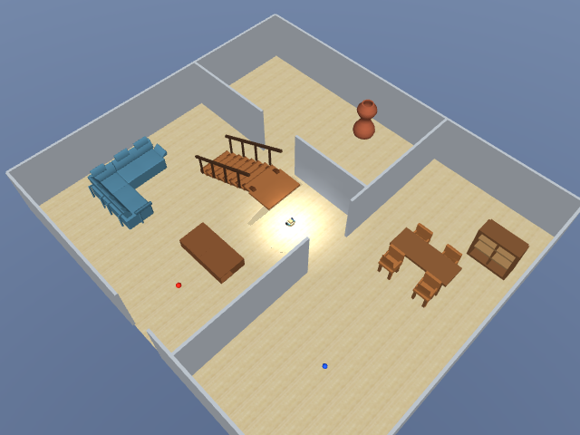
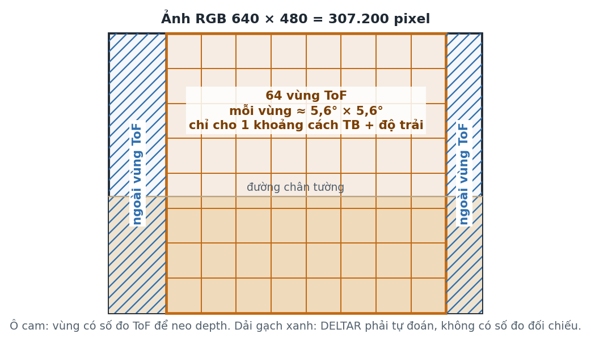
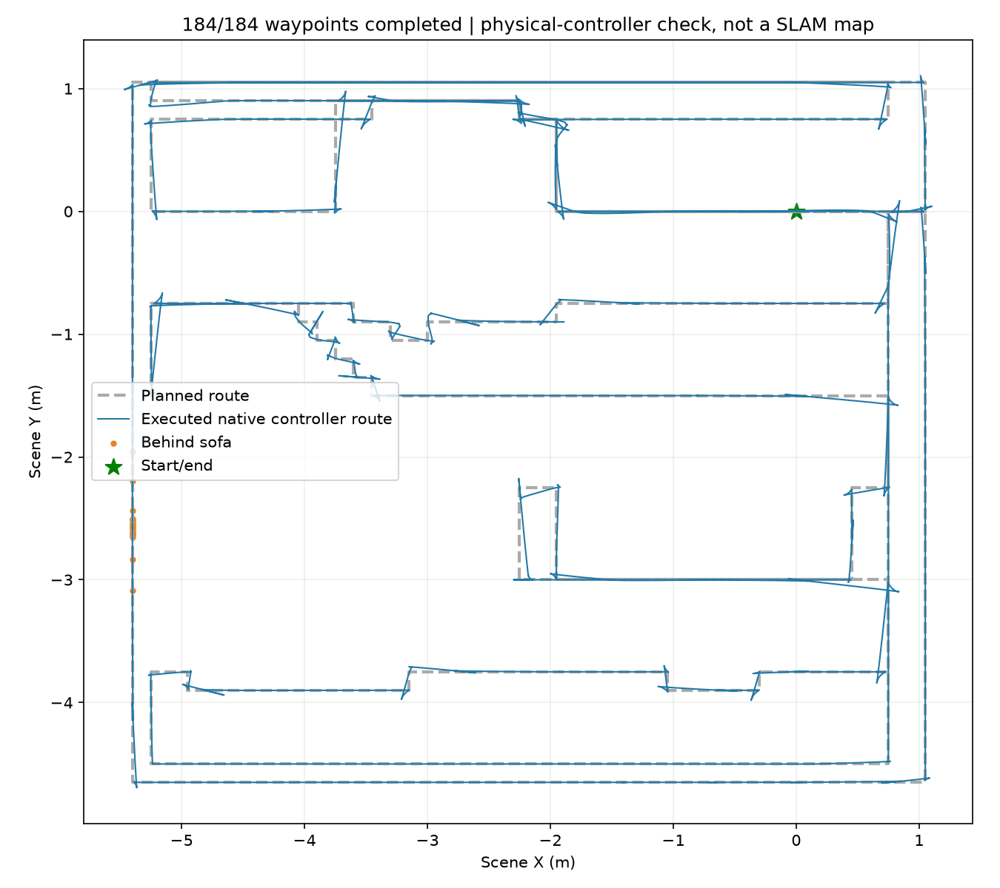
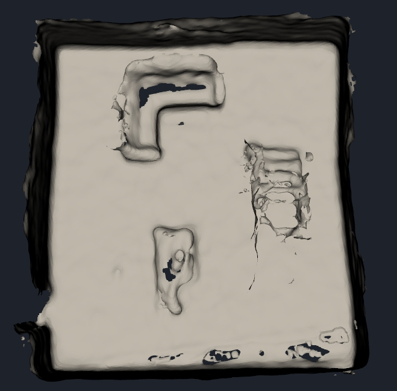
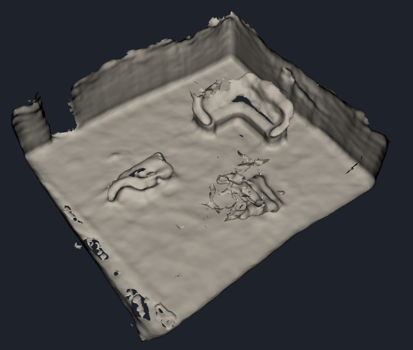
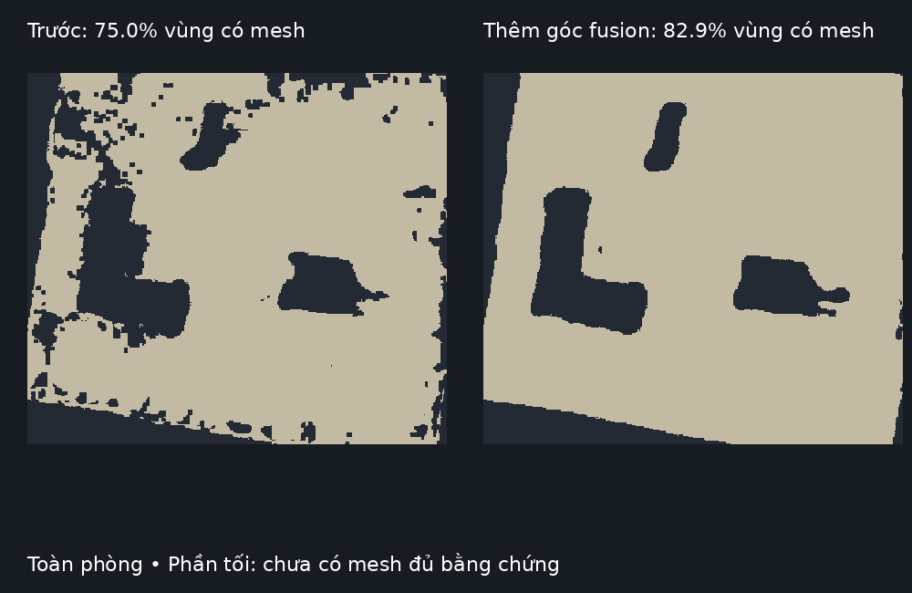
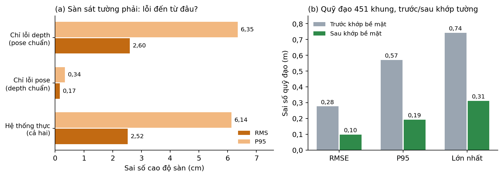
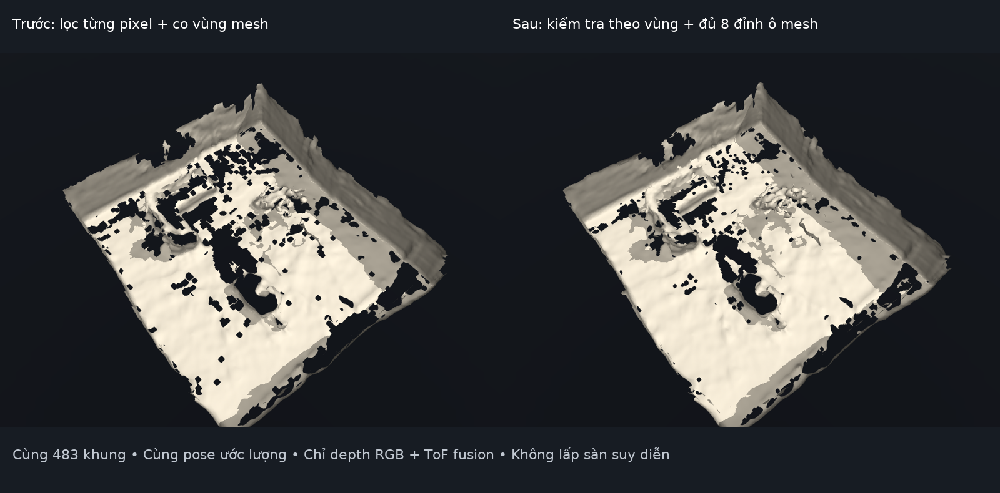
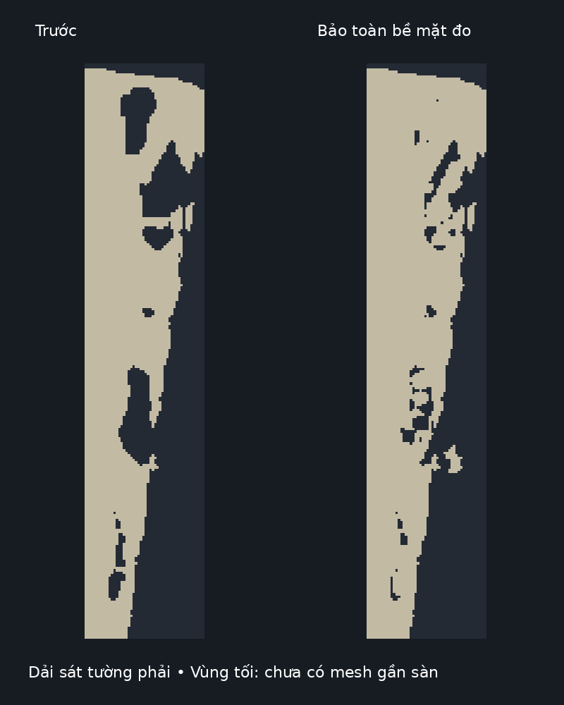

01 / CẢM NHẬN
Ảnh dày, phép đo thưa
RGB cho chi tiết hình ảnh; ToF cung cấp thống kê khoảng cách cho 64 vùng. DELTAR kết hợp hai nguồn để dự đoán depth dày.
Từ 64 vùng đo ToF đến bản đồ bề mặt 3D: quá trình xây dựng, kết quả và giới hạn trong môi trường mô phỏng.
RB là robot hai bánh–chân tự cân bằng. Mục tiêu là dựng bề mặt 3D trong nhà bằng camera màu và cảm biến ToF 8×8, dù robot liên tục dao động và cụm cảm biến quay theo đầu.
RGB cho chi tiết hình ảnh; ToF cung cấp thống kê khoảng cách cho 64 vùng. DELTAR kết hợp hai nguồn để dự đoán depth dày.
cuVSLAM theo dõi RGB-D; odometry bánh và IMU duy trì chuyển động thân. Động học cổ cập nhật vị trí camera theo thời gian.
Depth sau kiểm tra được tích lũy vào TSDF theo pose ước lượng; Marching Cubes trích xuất mesh tam giác.
Cảnh thử nghiệm là phòng khách trong MuJoCo, gồm sofa, bàn, cầu thang và các vách ngăn. Bộ điều khiển giữ thăng bằng chạy cùng mô hình vật lý; profile phòng khách đặt tốc độ mô phỏng ×5, trong khi GPU xử lý theo khả năng thực tế.
Map được tạo từ RGB, số đo ToF, calibration và pose ước lượng. Ground truth được giữ riêng cho đánh giá ngoại tuyến; vùng thiếu bằng chứng được để mở. ROS/RViz phục vụ hiển thị.

Chọn từng khối để xem vai trò và dữ liệu đi qua hệ thống.
RGB, ToF 8×8, encoder bánh, IMU và góc cổ được ghi theo thời gian. Snapshot ảnh được ghép với odometry trong giới hạn 20 ms.
Checkpoint NYU nhận ảnh RGB và thống kê ToF để suy ra độ sâu theo pixel. Kết quả là dự đoán của mạng, không phải phép đo ToF độc lập tại từng pixel.
Hệ thống căn bias, chiếu depth về đúng vùng đo và loại các điểm mâu thuẫn. Với vùng nhìn xiên, phân bố và tính liên tục giúp giữ số đo hợp lý trên mặt nghiêng.
Wheel–IMU cung cấp pose cục bộ; correction từ cuVSLAM được nhận qua gate. Fusion nằm ngoài cuVSLAM, với giả thiết nền ngang và bù chuyển động cổ.
TSDF kết hợp các keyframe, trích mesh và lọc nhiễu. Sau quét, surface matching dùng các mặt gần đứng để điều chỉnh X/Y/yaw rồi dựng lại TSDF.


Từ 912 khung ban đầu, 2.286 khung được bổ sung từ dữ liệu lia đầu đã ghi. Pose bổ sung truyền từ anchor ước lượng bằng wheel/IMU và động học cổ.
Tỷ lệ ô XY có mesh gần sàn trong vùng đo, không phải tỷ lệ phủ sàn thật.
Chỉ tính các tam giác vượt điều kiện chọn gần sàn trong khung đo.



Trong mẫu vùng sát tường phải, sai số depth đóng góp lớn hơn sai số pose. Đây là kết quả của phép tách lỗi trên một mẫu cụ thể.
Hai thành phần có tương quan và không cộng tuyến tính. Các khung đã tham gia dựng map, không phải tập kiểm tra độc lập.

Xét phân bố độ sâu và tính liên tục để giảm việc loại nhầm pixel sàn hợp lệ khi một vùng ToF chứa dải khoảng cách rộng.
Tính vị trí camera theo cổ và thân; sau quét, dùng surface matching có giới hạn trên mặt gần đứng để tinh chỉnh X/Y/yaw.
Khôi phục mặt gần ngang khi Gaussian làm mất zero crossing thô và đủ quan sát. Cách này cũng có thể giữ lại độ cong sai trong depth.


Các thử nghiệm ép mesh về mặt phẳng hoặc lọc nhiều góc không được giữ trong pipeline chính: hình đẹp hơn không tự chứng minh depth chính xác. Đọc phân tích và kết quả thử.
Đánh giá thích nghi DELTAR với miền mô phỏng và dữ liệu thật, khai thác phân bố ToF và độ tin cậy theo pixel.
Nghiên cứu fusion nhiều góc nhìn có trọng số, xử lý che khuất và đo riêng lỗi depth, pose, độ phủ.
Đánh giá loop closure và tối ưu cảm biến; tiến tới chọn góc nhìn dựa trên vùng chưa biết thay cho tuyến cố định.
Hiệu chuẩn camera–ToF, IMU, encoder và đồng bộ; đánh giá nhiễu cảm biến, tracking và an toàn trong các thử nghiệm thực tế.
Các con số trên là snapshot từ những lượt thử tháng 11/2026. Các báo cáo sau mô tả dữ liệu, điều kiện đo và giới hạn chi tiết: